비빔밥
비빔밥은 한국의 전통 음식 중 하나로 여러 가지 채소와 고기, 양념(대부분은 고추장을 양념으로 사용)을 함께 넣고 섞어 먹는 음식입니다.
대부분의 음식은 조리할때 사용하는 재료가 정해져 있지만, 비빔밥은 정해진 재료 없이 자신이 넣고 싶은 채소와 고기 등의 재료와
양념을 넣어 함께 잘 비벼 먹습니다. 또한 다양한 채소를 많이 섭취 가능하고 넣는 재료와 비율에 따라 맛이 달라지므로 색다른 맛을 경험할 수 잇습니다.
< 대표적인 비빔밥 종류 >
| 종류 |
이미지 |
| 꼬막비빔밥 |
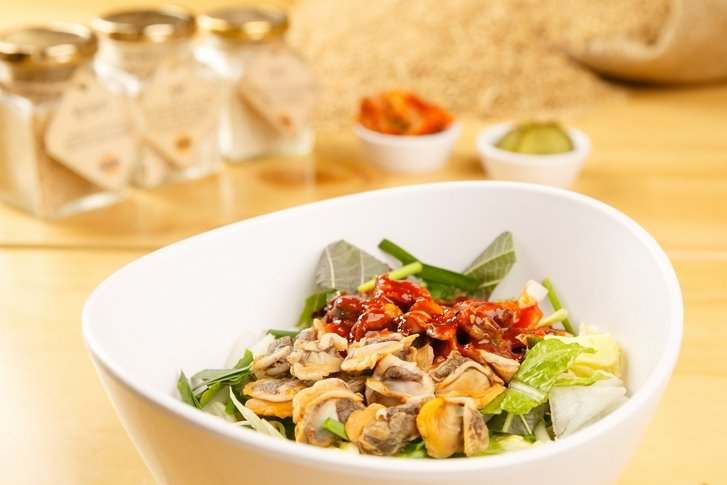 |
| 나물비빔밥 |
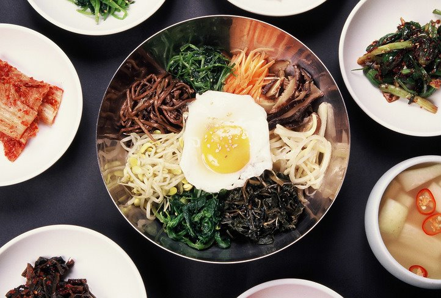 |
| 날치알비빔밥 |
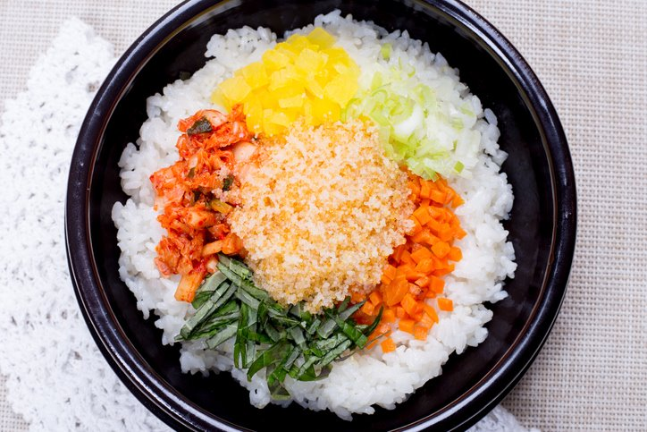 |
| 멍게알비빔밥 |
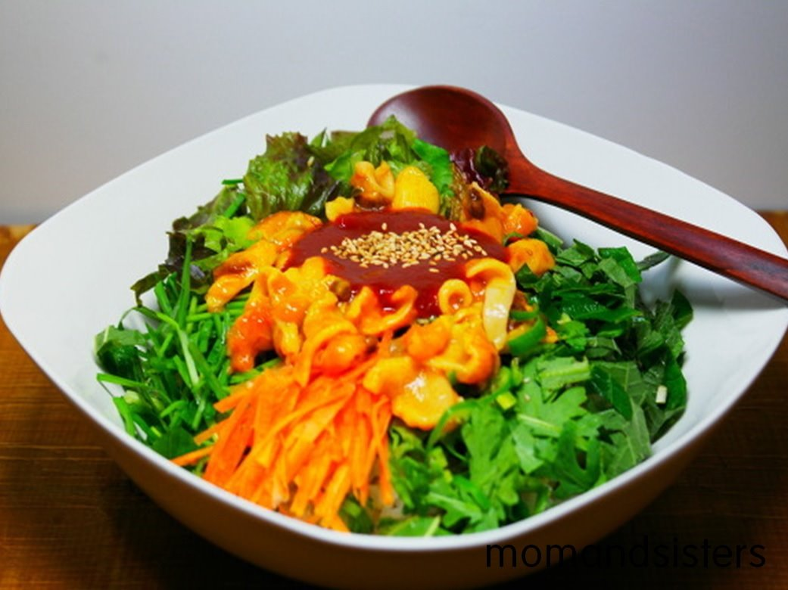 |
| 소고기비빔밥 |
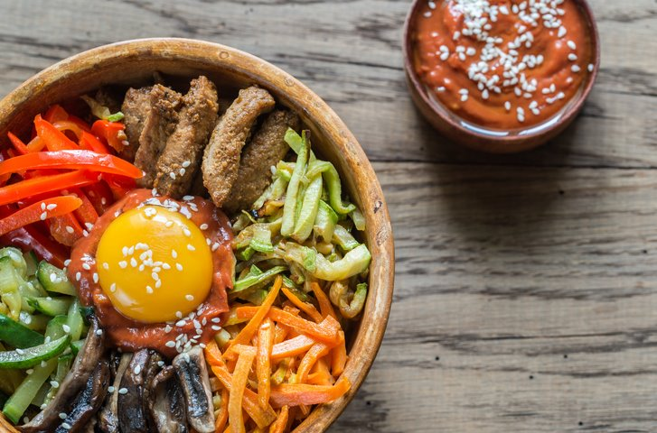 |
| 열무비빔밥 |
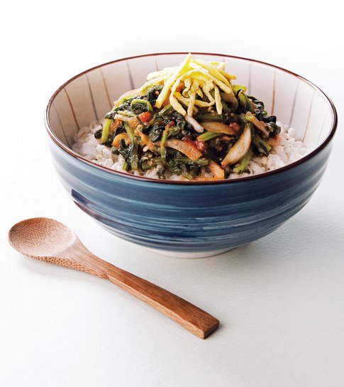 |
| 육회비빔밥 |
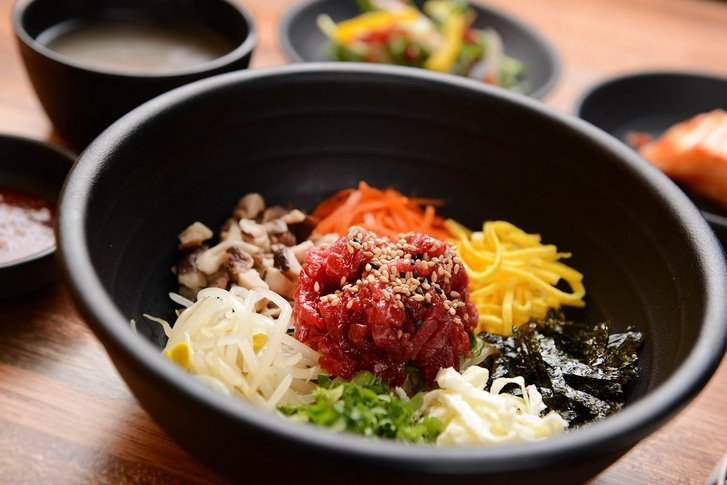 |
| 젓갈비빔밥 |
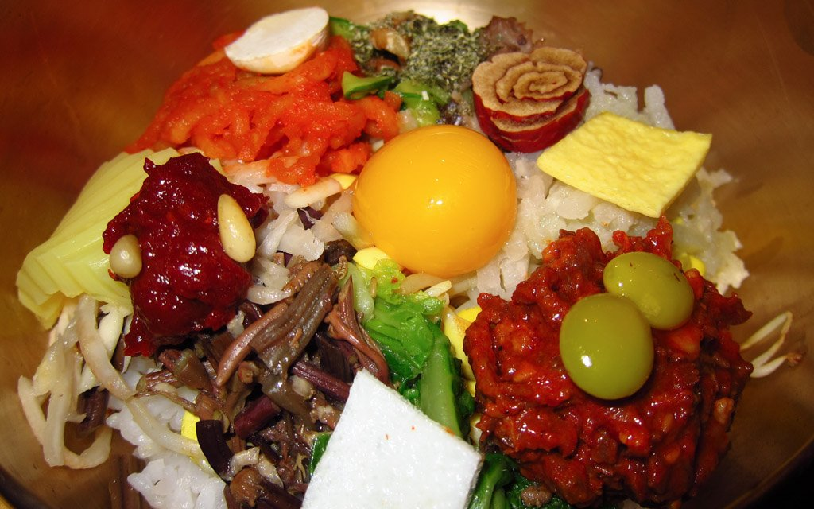 |
| 참치비빔밥 |
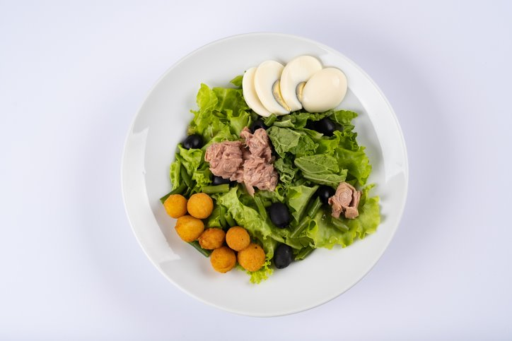 |
| 채소비빔밥 |
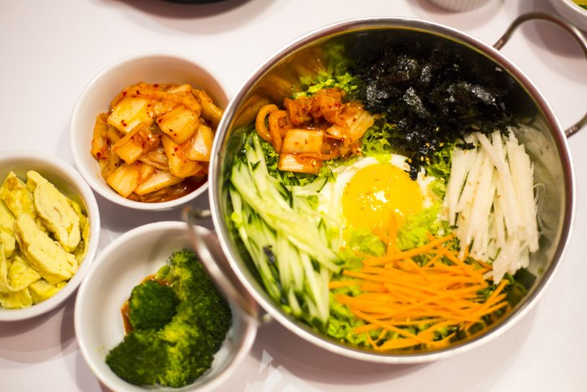 |
떡볶이
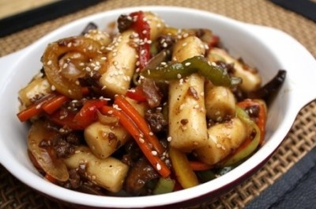
 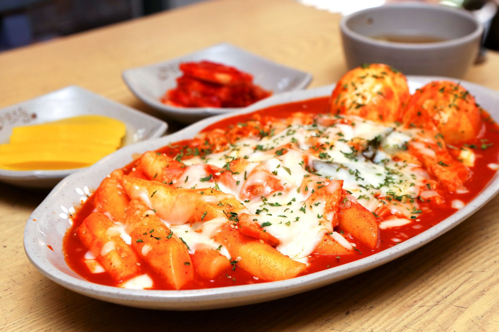
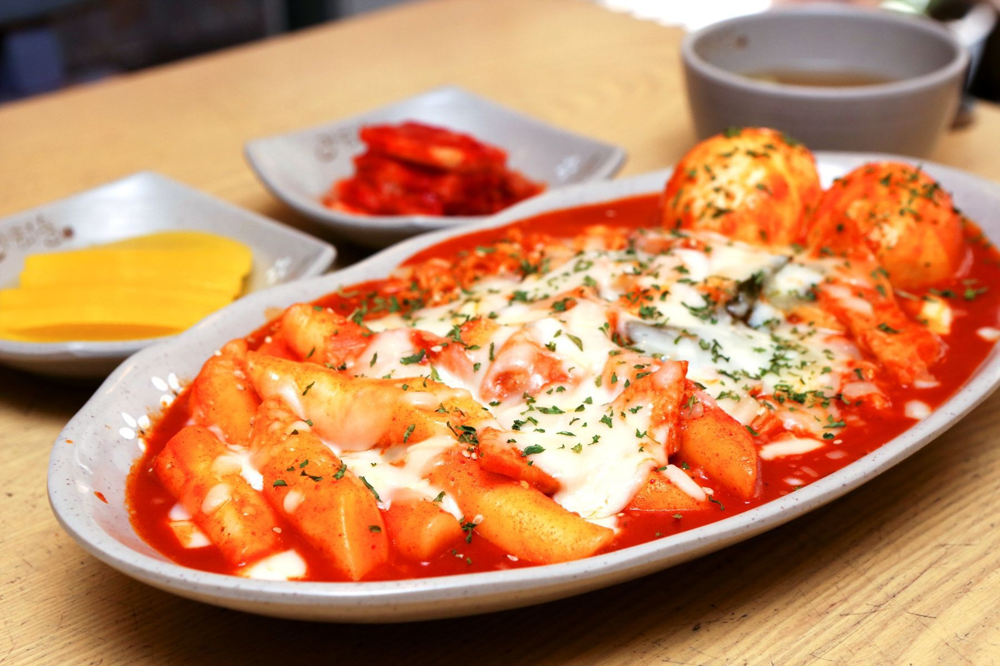
떡볶이는 가래떡을 적당한 크기로 잘라 여러가지 채소를 넣고 양념을 하여 볶은 음식으로, 고추장 떡볶이가 가장 대표적입니다.
떡볶이의 재료로는 채소, 어묵, 삶은달걀이 들어가지만 기호에 따라 다양한 재료를 추가/생략하기도 합니다. 고추장 외에 다른 양념을 사용할 수
있으며, 양념이나 넣는 재료에 따라 '라볶이(라면+떡볶이)', '치즈 떡볶이' 등이 됩니다. 매운 맛을 선호하지 않는다면 간장 양념을 사용한
'간장 떡볶이'를 먹을 수 있습니다. 떡볶이를 먹을 때 야채튀김, 오징어 튀김, 새우 튀김 등과 같은 튀김류와 함께 먹기도 합니다.
치맥
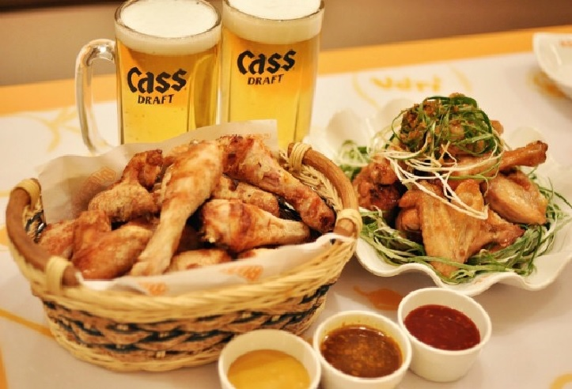
치맥은 '치킨'과 '맥주'의 앞 글자를 따서 부르는 말로, 치킨과 맥주의 조합은 한국인에게 오래 전부터 사랑받아 왔습니다.
치킨은 외국에서도 존재하지만 맥주와 함께 안주로 치킨을 먹는 것은 한국에서 시작된 음식문화이며, K-drama의 인기와
인터넷과 유튜브, SNS 등의 발달로 널리 알려지게 된 한국 음식입니다. 가장 기본적인 프라이드 치킨부터 빨간 고추장 양념에 버무려진 양념치킨,
간장 치킨, 파닭 등이 있습니다. 이외에도 프렌차이즈 치킨집마다 각각의 다양한 메뉴가 존재합니다.
짜장면(자장면)
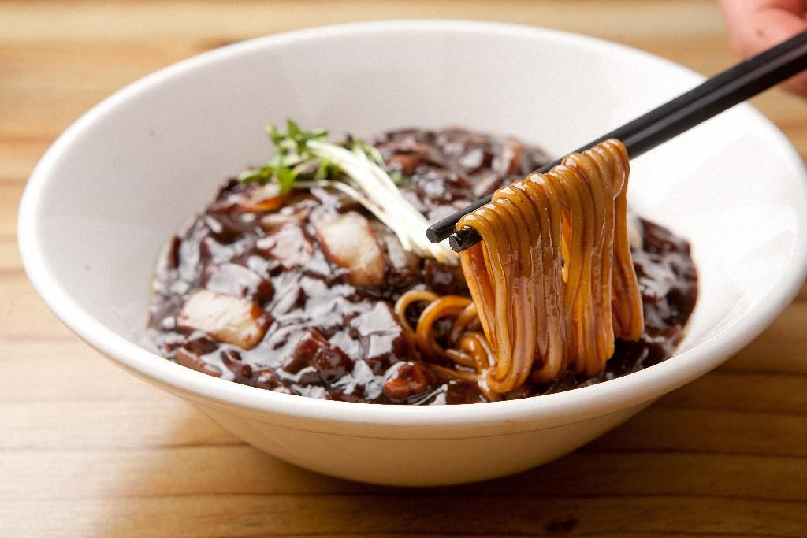
짜장면은 여러 가지 다진 야채와 돼지고기를 넣고 식용유와 춘장(중국 된장)으로 볶은 양념을 국수와 비벼 먹는 음식입니다. 치킨과 더불어 한국 배달
음식의 양대산맥으로, 중화요리집의 3대 메뉴 중 하나입니다. 원래는 중국 음식인 '자장몐'이 한국인의 입맛에 맞도록 변화된 음식으로,
중국 요리라는 인식이 강하지만 한식으로 볼 수 있습니다. 맵지 않아 남녀노소 부담 없이 즐길 수 있는 음식이며, 재료의 특성 상 집에서
직접 만들어 먹기가 어렵기 때문에, 보통은 중화요리집에 가서 먹거나 배달시켜 먹습니다.